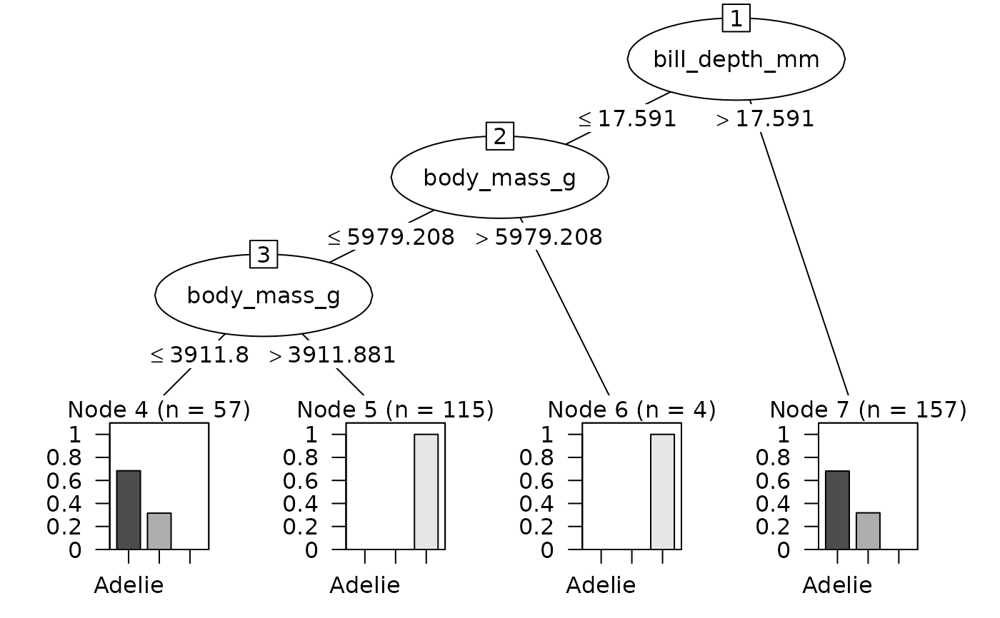

as.party.bart.RdConvert a single tree from a BART (Bayesian Additive Regression Trees) model to a party object for use with partykit visualization and analysis tools.
# S3 method for class 'bart'
as.party(obj, tree = 1L, chain = 1L, data, ...)A bart object from the dbarts package fitted with
keeptrees = TRUE.
Integer specifying which tree to convert (1-based indexing,
default is 1). BART models contain n.trees trees in the ensemble.
Integer specifying which MCMC chain to extract from (1-based indexing, default is 1). Only relevant for models fitted with multiple chains.
data.frame containing the original untransformed training data with original response values (required). BART internally transforms data (creating dummy variables for factors and converting responses to 0/1). You must provide the original data frame that includes both the predictor variables and the response variable in their original formats (e.g., factors for classification).
Not currently used.
A constparty object from the partykit package.
BART internally transforms the training data in ways that make it unsuitable
for display in party objects. Specifically, BART creates dummy variables for
factor predictors and converts factor responses to 0/1 numeric values. To get
correct terminal node statistics, bar charts, and other visualizations, you
must provide the original untransformed data (including the response
variable) via the data parameter.
The dbarts package stores trees in depth-first traversal order in a
data.frame accessible via obj$fit$getTrees(). Each row represents one node:
var: 1-based variable index for split, or -1 for terminal nodes
value: threshold for internal nodes, prediction for terminal nodes
tree: 1-based tree number
chain: chain number (if multiple chains)
sample: MCMC sample number
Nodes stored as: parent, left subtree (complete), right subtree (complete)
Example: root at row 1, left child at row 2, right child after left subtree
Must track row consumption to determine subtree boundaries
User-facing tree and chain parameters use 1-based indexing (R convention)
Variable indices in var column are 1-based (match obj$varNames)
Value -1 in var indicates terminal node
if (rlang::is_installed(c("dbarts", "palmerpenguins"))) {
# Classification example
data(penguins, package = "palmerpenguins")
penguins <- na.omit(penguins)
# Prepare data with response column
train_data <- penguins[, c("bill_length_mm", "bill_depth_mm",
"flipper_length_mm", "body_mass_g", "species")]
set.seed(2847)
fit <- dbarts::bart(
x.train = train_data[, 1:4],
y.train = train_data$species,
keeptrees = TRUE,
verbose = FALSE,
ntree = 2
)
# Convert first tree - data parameter is required
# Response will be preserved in original format (e.g., factor for classification)
party_tree <- as.party(fit, tree = 1L, chain = 1L, data = train_data)
print(party_tree)
plot(party_tree)
# Regression example
data(mtcars)
set.seed(5193)
fit_reg <- dbarts::bart(
x.train = mtcars[, -1],
y.train = mtcars$mpg,
keeptrees = TRUE,
verbose = FALSE,
ntree = 2
)
party_tree_reg <- as.party(fit_reg, tree = 1L, chain = 1L, data = mtcars)
print(party_tree_reg)
}
#>
#> Model formula:
#> ~bill_length_mm + bill_depth_mm + flipper_length_mm + body_mass_g
#>
#> Fitted party:
#> [1] root
#> | [2] bill_depth_mm <= 17.59109
#> | | [3] body_mass_g <= 5979.20792
#> | | | [4] body_mass_g <= 3911.88119: Adelie (n = 57, err = 31.6%)
#> | | | [5] body_mass_g > 3911.88119: Gentoo (n = 115, err = 0.0%)
#> | | [6] body_mass_g > 5979.20792: Gentoo (n = 4, err = 0.0%)
#> | [7] bill_depth_mm > 17.59109: Adelie (n = 157, err = 31.8%)
#>
#> Number of inner nodes: 3
#> Number of terminal nodes: 4

#>
#> Model formula:
#> ~cyl + disp + hp + drat + wt + qsec + vs + am + gear + carb
#>
#> Fitted party:
#> [1] root
#> | [2] wt <= 2.28746: 30.067 (n = 6, err = 44.6)
#> | [3] wt > 2.28746: 17.788 (n = 26, err = 346.6)
#>
#> Number of inner nodes: 1
#> Number of terminal nodes: 2